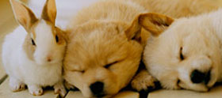

창업을 꿈꾸는 이들이 함께 모여 아이디어 개발, 교류·협력, 경험과 기술을 공유하는 개방형 창업 플랫폼
기업 및 연구원 출신의 전문경력을 보유한 만 40세 이상 시니어 창업자의 아이디어 발굴, 교육 및 자문 등 사업화를 지원하여 일자리 창출 등 지역경제 활성화
e-커머스 분야의 청년 창업지원으로 국내 제품의 해외 온라인 판매를 활성화하여 청년창업 촉진 및 일자리 창출 유도
창의적인 아이디어와 우수한 사업과제를 보유한 유망스타트업을 발굴, 글로벌 스타트업으로 육성

반려동물 창업분야의 우수기술과 아이디어를 구체화 및 사업화하여 성공창업 및 일자리 창출기여, 경기도 반려동물 테마파크와 연계한 지식기반 융합지원 추진
성실한 실패경험과 유망한 창업아이템을 보유한 (예비)재창업자의 성공적인 재창업지원 사업